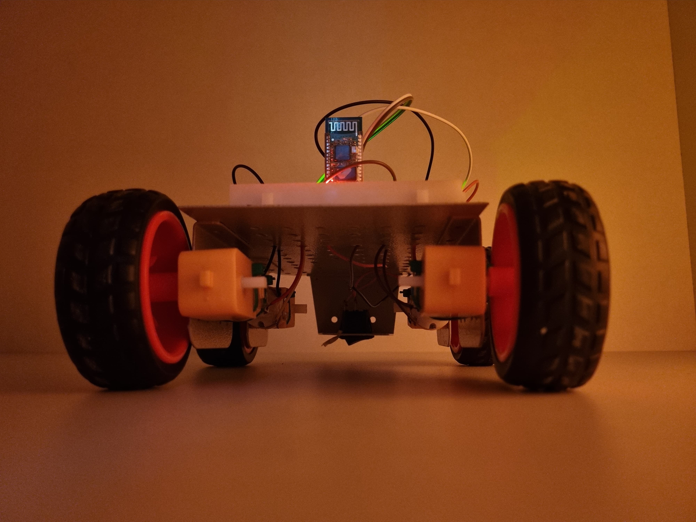
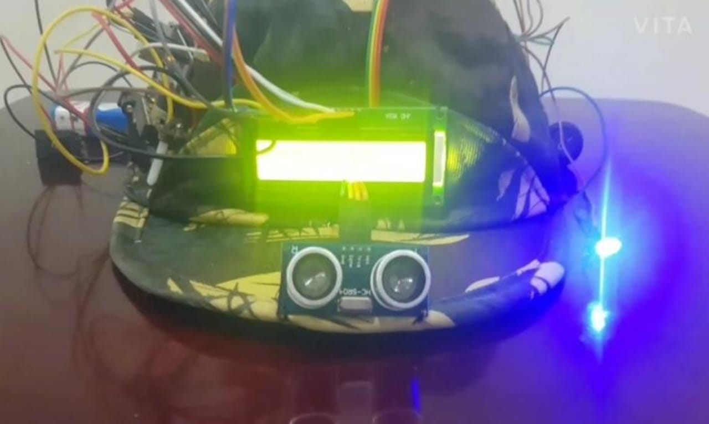
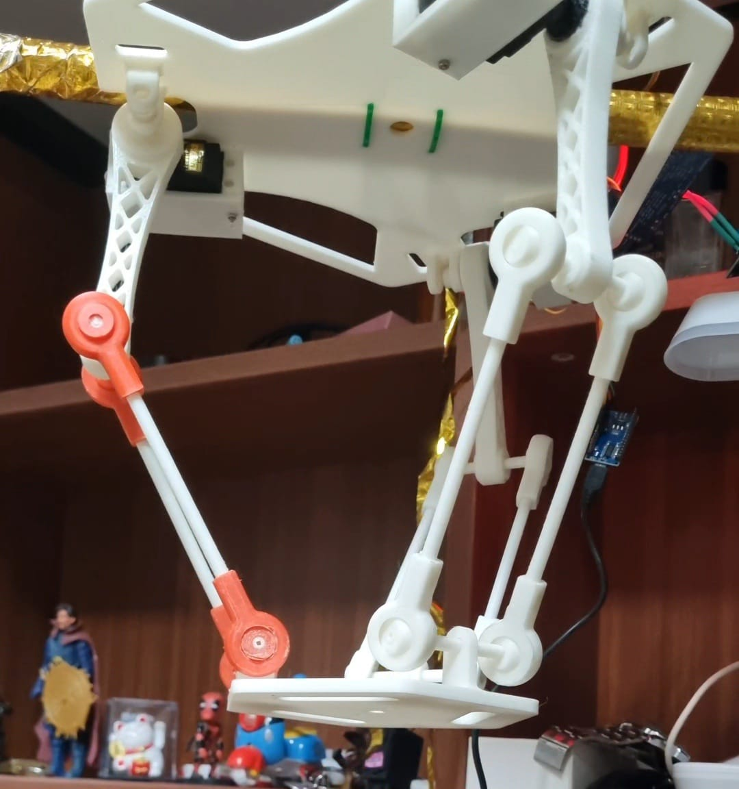
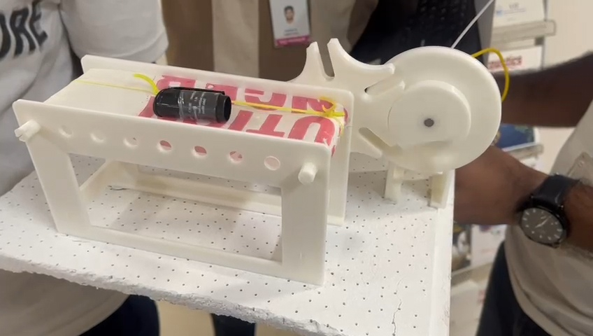
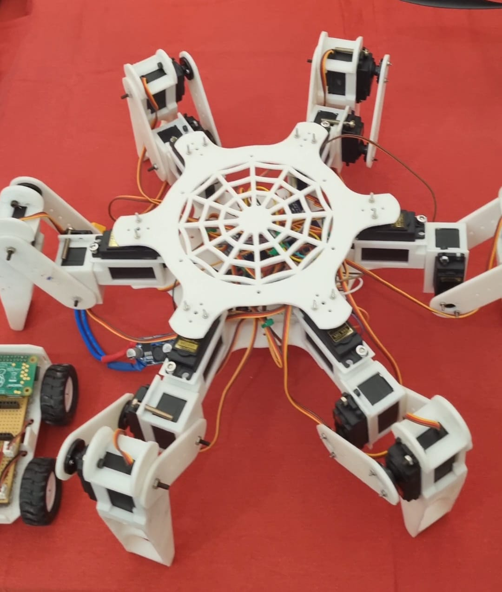
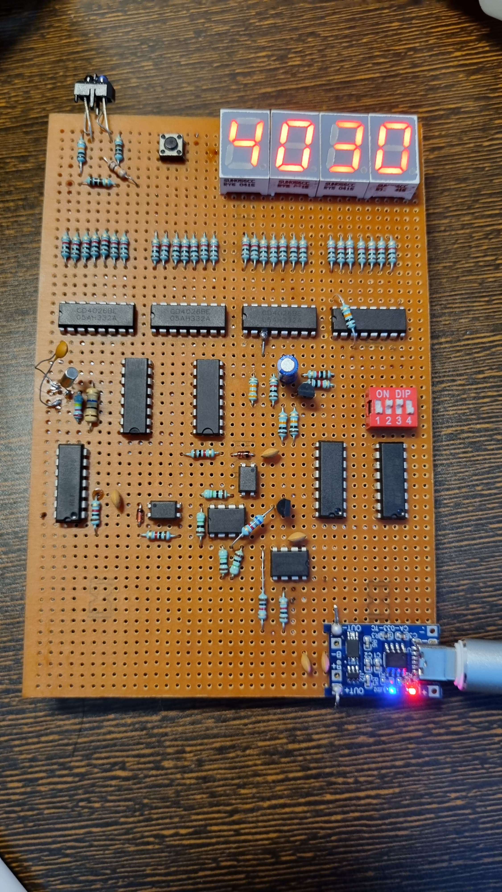
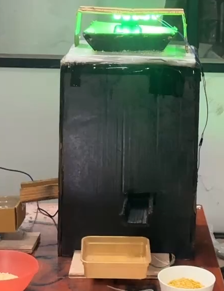
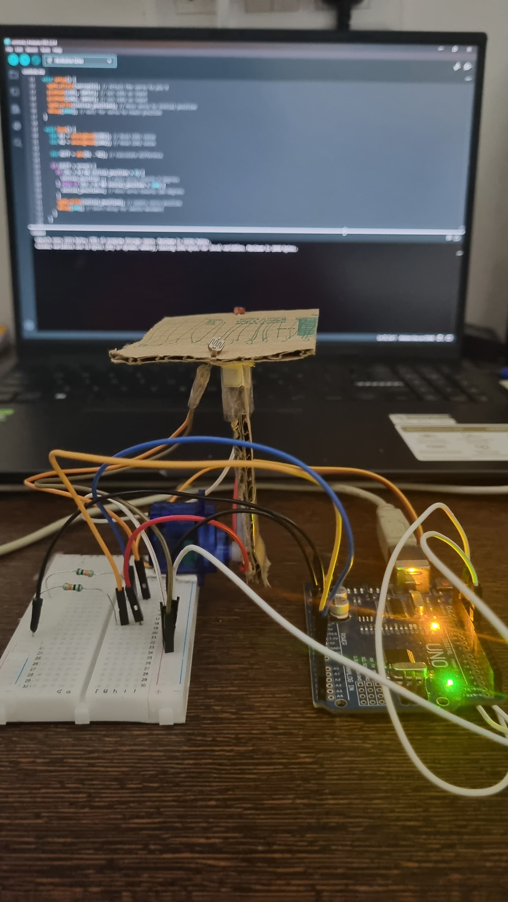

RB-M01 / MISSION FILE
Voice Controlled Car
A wireless voice-controlled robotic car using Arduino, Bluetooth communication, motor driver control, and DC motors.
MISSION FILES
A curated archive of robotics, CAD, embedded systems, simulation, digital twin, UAV, and AI-based engineering projects.

RB-M01 / MISSION FILE
A wireless voice-controlled robotic car using Arduino, Bluetooth communication, motor driver control, and DC motors.

RB-M02 / MISSION FILE
A sensor-based embedded prototype integrating ultrasonic sensing, display feedback, and automated control logic.

RB-M03 / MISSION FILE
A servo-driven parallel manipulator built with 3D-printed mechanical linkages for robotic positioning experiments.

RB-M04 / MISSION FILE
A mechanical conveyor prototype using Geneva indexing motion to demonstrate controlled intermittent movement.

RB-M05 / MISSION FILE
A six-legged robotic platform with 18 servo-controlled joints designed for tripod gait walking and legged locomotion experiments.

RB-M06 / MISSION FILE
A digital RPM measurement system using non-contact sensing, counter logic, and 7-segment display output.

RB-M07 / MISSION FILE
An embedded smart packaging and dispensing prototype using sensors, control logic, and actuator-based automation.

RB-M08 / MISSION FILE
An Arduino-based solar tracker that uses LDR sensors and servo movement to follow the direction of maximum light intensity.
PROJECT PIPELINE
This archive will continue expanding with robotics builds, CAD systems, simulations, and engineering experiments.